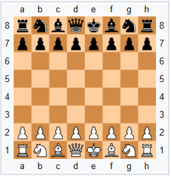

Chess setup
To set up a chessboard correctly, orient the board so that each player has a light-colored square in the bottom-right corner. This rule, often remembered as "white on the right," ensures the board is aligned properly for standard notation.

Place the major pieces on the back rank (the first row closest to each player) in the order: Rook, Knight, Bishop, Queen, King, Bishop, Knight, Rook. The critical detail is that the Queen always starts on her own color: the White Queen on a light square (d1) and the Black Queen on a dark square (d8). The King occupies the remaining central square next to the Queen.
Finally, line up all eight Pawns on the second rank directly in front of the major pieces. White’s pawns occupy the second row, while Black’s pawns occupy the seventh row, creating a protective wall for the rest of the army.
Chess rules
The rules of chess are published by FIDE (French: Fédération Internationale des Échecs, 'International Chess Federation'), world governing body of chess, in its Handbook. Rules published by national governing bodies, or by unaffiliated chess organizations, commercial publishers, etc., may differ in some details. For example, the United States Chess Federation (USCF) diverged from FIDE in the 1980s over differences in time-keeping rules.
Chess pieces movement
White moves first, after which players alternate turns. One piece is moved per turn (except when castling, during which two pieces are moved). In the diagrams, dots mark the squares to which each type of piece can move if unoccupied by friendly pieces and there are no intervening piece(s) of either color (except the knight, which leaps over any intervening pieces). With the sole exception of en passant, a piece captures an enemy piece by moving to the square it occupies, removing it from play and taking its place. The pawn is the only piece that does not capture the way it moves, and it is the only piece that moves and captures in only one direction (forwards from the player's perspective). A piece is said to control empty squares on which it could capture, attack squares with enemy pieces it could capture, and defend squares with pieces of the same color on which it could recapture. Moving is compulsory; a player may not skip a turn.
- The king moves one square in any direction. There is also a special move called castling which moves the king and a rook. The king is the most valuable piece—it is illegal to play any move that puts one's king under attack by an opponent piece. A move that attacks the king must be parried immediately; if this cannot be done, the game is lost.
- A rook can move any number of squares along a rank or file. A rook is involved in the king's castling move.
- A bishop can move any number of squares diagonally.
- A queen combines the power of a rook and bishop and can move any number of squares along a rank, file, or diagonal.
- A knight moves to any of the closest squares that are not on the same rank, file, or diagonal. (Thus the move forms an "L"-shape: two squares vertically and one square horizontally, or two squares horizontally and one square vertically.) The knight is the only piece that can leap over other pieces.
- A pawn can move forward to the unoccupied square immediately in front of it on the same file, or on its first move it can optionally advance two squares along the same file, provided both squares are unoccupied (diagram dots). A pawn can capture an opponent's piece on a square diagonally in front of it by moving to that square (diagram crosses). It cannot capture a piece while advancing along the same file, nor can it move to either square diagonally in front without capturing. Pawns have two special moves: the en passant capture and promotion.